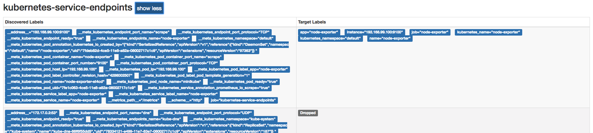
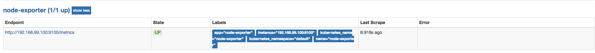

<!doctype html>
<html lang="en" class="no-js">
  <head>
    
      <meta charset="utf-8">
      <meta name="viewport" content="width=device-width,initial-scale=1">
      
      
      
      
      
      <link rel="icon" href="../../assets/favicon.png">
      <meta name="generator" content="mkdocs-1.4.2, mkdocs-material-9.0.15">
    
    
      
        <title>监控集群基础设施 - Prometheus Learning Path</title>
      
    
    
      <link rel="stylesheet" href="../../assets/stylesheets/main.113286f1.min.css">
      
        
        <link rel="stylesheet" href="../../assets/stylesheets/palette.a0c5b2b5.min.css">
      
      

    
    
    
      
        
        
        <link rel="preconnect" href="https://fonts.gstatic.com" crossorigin>
        <link rel="stylesheet" href="https://fonts.googleapis.com/css?family=Roboto:300,300i,400,400i,700,700i%7CRoboto+Mono:400,400i,700,700i&display=fallback">
        <style>:root{--md-text-font:"Roboto";--md-code-font:"Roboto Mono"}</style>
      
    
    
    <script>__md_scope=new URL("../..",location),__md_hash=e=>[...e].reduce((e,_)=>(e<<5)-e+_.charCodeAt(0),0),__md_get=(e,_=localStorage,t=__md_scope)=>JSON.parse(_.getItem(t.pathname+"."+e)),__md_set=(e,_,t=localStorage,a=__md_scope)=>{try{t.setItem(a.pathname+"."+e,JSON.stringify(_))}catch(e){}}</script>
    
      

    
    
    
  </head>
  
  
    
    
    
    
    
    <body dir="ltr" data-md-color-scheme="default" data-md-color-primary="indigo" data-md-color-accent="">
  
    
    
    <input class="md-toggle" data-md-toggle="drawer" type="checkbox" id="__drawer" autocomplete="off">
    <input class="md-toggle" data-md-toggle="search" type="checkbox" id="__search" autocomplete="off">
    <label class="md-overlay" for="__drawer"></label>
    <div data-md-component="skip">
      
        
        <a href="#_1" class="md-skip">
          Skip to content
        </a>
      
    </div>
    <div data-md-component="announce">
      
    </div>
    
    
      

<header class="md-header" data-md-component="header">
  <nav class="md-header__inner md-grid" aria-label="Header">
    <a href="../.." title="Prometheus Learning Path" class="md-header__button md-logo" aria-label="Prometheus Learning Path" data-md-component="logo">
      
  

    </a>
    <label class="md-header__button md-icon" for="__drawer">
      <svg xmlns="http://www.w3.org/2000/svg" viewBox="0 0 24 24"><path d="M3 6h18v2H3V6m0 5h18v2H3v-2m0 5h18v2H3v-2Z"/></svg>
    </label>
    <div class="md-header__title" data-md-component="header-title">
      <div class="md-header__ellipsis">
        <div class="md-header__topic">
          <span class="md-ellipsis">
            Prometheus Learning Path
          </span>
        </div>
        <div class="md-header__topic" data-md-component="header-topic">
          <span class="md-ellipsis">
            
              监控集群基础设施
            
          </span>
        </div>
      </div>
    </div>
    
    
    
      <label class="md-header__button md-icon" for="__search">
        <svg xmlns="http://www.w3.org/2000/svg" viewBox="0 0 24 24"><path d="M9.5 3A6.5 6.5 0 0 1 16 9.5c0 1.61-.59 3.09-1.56 4.23l.27.27h.79l5 5-1.5 1.5-5-5v-.79l-.27-.27A6.516 6.516 0 0 1 9.5 16 6.5 6.5 0 0 1 3 9.5 6.5 6.5 0 0 1 9.5 3m0 2C7 5 5 7 5 9.5S7 14 9.5 14 14 12 14 9.5 12 5 9.5 5Z"/></svg>
      </label>
      <div class="md-search" data-md-component="search" role="dialog">
  <label class="md-search__overlay" for="__search"></label>
  <div class="md-search__inner" role="search">
    <form class="md-search__form" name="search">
      <input type="text" class="md-search__input" name="query" aria-label="Search" placeholder="Search" autocapitalize="off" autocorrect="off" autocomplete="off" spellcheck="false" data-md-component="search-query" required>
      <label class="md-search__icon md-icon" for="__search">
        <svg xmlns="http://www.w3.org/2000/svg" viewBox="0 0 24 24"><path d="M9.5 3A6.5 6.5 0 0 1 16 9.5c0 1.61-.59 3.09-1.56 4.23l.27.27h.79l5 5-1.5 1.5-5-5v-.79l-.27-.27A6.516 6.516 0 0 1 9.5 16 6.5 6.5 0 0 1 3 9.5 6.5 6.5 0 0 1 9.5 3m0 2C7 5 5 7 5 9.5S7 14 9.5 14 14 12 14 9.5 12 5 9.5 5Z"/></svg>
        <svg xmlns="http://www.w3.org/2000/svg" viewBox="0 0 24 24"><path d="M20 11v2H8l5.5 5.5-1.42 1.42L4.16 12l7.92-7.92L13.5 5.5 8 11h12Z"/></svg>
      </label>
      <nav class="md-search__options" aria-label="Search">
        
        <button type="reset" class="md-search__icon md-icon" title="Clear" aria-label="Clear" tabindex="-1">
          <svg xmlns="http://www.w3.org/2000/svg" viewBox="0 0 24 24"><path d="M19 6.41 17.59 5 12 10.59 6.41 5 5 6.41 10.59 12 5 17.59 6.41 19 12 13.41 17.59 19 19 17.59 13.41 12 19 6.41Z"/></svg>
        </button>
      </nav>
      
    </form>
    <div class="md-search__output">
      <div class="md-search__scrollwrap" data-md-scrollfix>
        <div class="md-search-result" data-md-component="search-result">
          <div class="md-search-result__meta">
            Initializing search
          </div>
          <ol class="md-search-result__list" role="presentation"></ol>
        </div>
      </div>
    </div>
  </div>
</div>
    
    
  </nav>
  
</header>
    
    <div class="md-container" data-md-component="container">
      
      
        
          
        
      
      <main class="md-main" data-md-component="main">
        <div class="md-main__inner md-grid">
          
            
              
              <div class="md-sidebar md-sidebar--primary" data-md-component="sidebar" data-md-type="navigation" >
                <div class="md-sidebar__scrollwrap">
                  <div class="md-sidebar__inner">
                    


<nav class="md-nav md-nav--primary" aria-label="Navigation" data-md-level="0">
  <label class="md-nav__title" for="__drawer">
    <a href="../.." title="Prometheus Learning Path" class="md-nav__button md-logo" aria-label="Prometheus Learning Path" data-md-component="logo">
      
  

    </a>
    Prometheus Learning Path
  </label>
  
  <ul class="md-nav__list" data-md-scrollfix>
    
      
      
      

  
  
  
    <li class="md-nav__item">
      <a href="../../catalogue/" class="md-nav__link">
        目录
      </a>
    </li>
  

    
      
      
      

  
  
  
    
    <li class="md-nav__item md-nav__item--nested">
      
      
      
      
      <input class="md-nav__toggle md-toggle " type="checkbox" id="__nav_2" >
      
      
      
        <label class="md-nav__link" for="__nav_2" id="__nav_2_label" tabindex="0">
          第1章 天降奇兵
          <span class="md-nav__icon md-icon"></span>
        </label>
      
      <nav class="md-nav" data-md-level="1" aria-labelledby="__nav_2_label" aria-expanded="false">
        <label class="md-nav__title" for="__nav_2">
          <span class="md-nav__icon md-icon"></span>
          第1章 天降奇兵
        </label>
        <ul class="md-nav__list" data-md-scrollfix>
          
            
              
  
  
  
    <li class="md-nav__item">
      <a href="../../quickstart/why-monitor/" class="md-nav__link">
        Prometheus简介
      </a>
    </li>
  

            
          
            
              
  
  
  
    <li class="md-nav__item">
      <a href="../../quickstart/prometheus-quick-start/" class="md-nav__link">
        初识Prometheus
      </a>
    </li>
  

            
          
            
              
  
  
  
    <li class="md-nav__item">
      <a href="../../quickstart/install-prometheus-server/" class="md-nav__link">
        安装Prometheus
      </a>
    </li>
  

            
          
            
              
  
  
  
    <li class="md-nav__item">
      <a href="../../quickstart/use-node-exporter/" class="md-nav__link">
        使用Node Exporter采集主机数据
      </a>
    </li>
  

            
          
            
              
  
  
  
    <li class="md-nav__item">
      <a href="../../quickstart/promql_quickstart/" class="md-nav__link">
        使用PromQL查询监控数据
      </a>
    </li>
  

            
          
            
              
  
  
  
    <li class="md-nav__item">
      <a href="../../quickstart/use-grafana-create-dashboard" class="md-nav__link">
        监控数据可视化
      </a>
    </li>
  

            
          
            
              
  
  
  
    <li class="md-nav__item">
      <a href="../../quickstart/prometheus-job-and-instance/" class="md-nav__link">
        任务和实例
      </a>
    </li>
  

            
          
            
              
  
  
  
    <li class="md-nav__item">
      <a href="../../quickstart/prometheus-arch/" class="md-nav__link">
        Prometheus核心组件
      </a>
    </li>
  

            
          
            
              
  
  
  
    <li class="md-nav__item">
      <a href="../../quickstart/SUMMARY/" class="md-nav__link">
        小结
      </a>
    </li>
  

            
          
        </ul>
      </nav>
    </li>
  

    
      
      
      

  
  
  
    
    <li class="md-nav__item md-nav__item--nested">
      
      
      
      
      <input class="md-nav__toggle md-toggle " type="checkbox" id="__nav_3" >
      
      
      
        <label class="md-nav__link" for="__nav_3" id="__nav_3_label" tabindex="0">
          第二章 探索PromQL
          <span class="md-nav__icon md-icon"></span>
        </label>
      
      <nav class="md-nav" data-md-level="1" aria-labelledby="__nav_3_label" aria-expanded="false">
        <label class="md-nav__title" for="__nav_3">
          <span class="md-nav__icon md-icon"></span>
          第二章 探索PromQL
        </label>
        <ul class="md-nav__list" data-md-scrollfix>
          
            
              
  
  
  
    <li class="md-nav__item">
      <a href="../../promql/what-is-prometheus-metrics-and-labels/" class="md-nav__link">
        理解时间序列
      </a>
    </li>
  

            
          
        </ul>
      </nav>
    </li>
  

    
      
      
      

  
  
  
    
    <li class="md-nav__item md-nav__item--nested">
      
      
      
      
      <input class="md-nav__toggle md-toggle " type="checkbox" id="__nav_4" >
      
      
      
        <label class="md-nav__link" for="__nav_4" id="__nav_4_label" tabindex="0">
          第3章 Prometheus告警处理
          <span class="md-nav__icon md-icon"></span>
        </label>
      
      <nav class="md-nav" data-md-level="1" aria-labelledby="__nav_4_label" aria-expanded="false">
        <label class="md-nav__title" for="__nav_4">
          <span class="md-nav__icon md-icon"></span>
          第3章 Prometheus告警处理
        </label>
        <ul class="md-nav__list" data-md-scrollfix>
          
            
              
  
  
  
    <li class="md-nav__item">
      <a href="../../alert/prometheus-alert-manager-overview/" class="md-nav__link">
        Prometheus告警简介
      </a>
    </li>
  

            
          
        </ul>
      </nav>
    </li>
  

    
      
      
      

  
  
  
    
    <li class="md-nav__item md-nav__item--nested">
      
      
      
      
      <input class="md-nav__toggle md-toggle " type="checkbox" id="__nav_5" >
      
      
      
        <label class="md-nav__link" for="__nav_5" id="__nav_5_label" tabindex="0">
          第4章 Exporter详解
          <span class="md-nav__icon md-icon"></span>
        </label>
      
      <nav class="md-nav" data-md-level="1" aria-labelledby="__nav_5_label" aria-expanded="false">
        <label class="md-nav__title" for="__nav_5">
          <span class="md-nav__icon md-icon"></span>
          第4章 Exporter详解
        </label>
        <ul class="md-nav__list" data-md-scrollfix>
          
            
              
  
  
  
    <li class="md-nav__item">
      <a href="../../exporter/what-is-prometheus-exporter/" class="md-nav__link">
        Exporter是什么
      </a>
    </li>
  

            
          
        </ul>
      </nav>
    </li>
  

    
  </ul>
</nav>
                  </div>
                </div>
              </div>
            
            
              
              <div class="md-sidebar md-sidebar--secondary" data-md-component="sidebar" data-md-type="toc" >
                <div class="md-sidebar__scrollwrap">
                  <div class="md-sidebar__inner">
                    

<nav class="md-nav md-nav--secondary" aria-label="Table of contents">
  
  
  
    
  
  
    <label class="md-nav__title" for="__toc">
      <span class="md-nav__icon md-icon"></span>
      Table of contents
    </label>
    <ul class="md-nav__list" data-md-component="toc" data-md-scrollfix>
      
        <li class="md-nav__item">
  <a href="#daemonsetnode-exporter" class="md-nav__link">
    使用Daemonset部署Node Exporter
  </a>
  
</li>
      
        <li class="md-nav__item">
  <a href="#kubernetesservice" class="md-nav__link">
    Kubernetes下Service负载均衡原理
  </a>
  
</li>
      
        <li class="md-nav__item">
  <a href="#endpointnode-exporter" class="md-nav__link">
    使用Endpoint发现Node Exporter实例
  </a>
  
</li>
      
    </ul>
  
</nav>
                  </div>
                </div>
              </div>
            
          
          
            <div class="md-content" data-md-component="content">
              <article class="md-content__inner md-typeset">
                
                  


<h1 id="_1">监控集群基础设施</h1>
<p>在第1章的“初始Prometheus”小节，我们已经基本了解和使用过Node Exporter。Node Exporter能够采集和获取当前所在主机的运行状态数据。本节将带领读者在Kubernetes中部署Node Exporter，并且通过Prometheus自动监控集群中所有节点资源使用情况。</p>
<h2 id="daemonsetnode-exporter">使用Daemonset部署Node Exporter</h2>
<p>在本章的“部署Prometheus”小节，我们使用了Kubernetes内置的控制器之一Deployment。Deployment能够确保Prometheus的Pod能够按照预期的状态在集群中运行，而Pod实例可能随机运行在任意节点上。而与Prometheus的部署不同的是，对于Node Exporter而言每个节点只运行一个唯一的实例，此时，就需要使用Kubernetes的另外一种控制器Daemonset。顾名思义，Daemonset的管理方式类似于操作系统中的守护进程。Daemonset会确保在集群中所有（也可以指定）节点上运行一个唯一的Pod实例。</p>
<p>创建node-exporter-daemonset.yml文件，并写入以下内容：</p>
<pre><code>apiVersion: v1
kind: Service
metadata:
  annotations:
    prometheus.io/scrape: 'true'
  labels:
    app: node-exporter
    name: node-exporter
  name: node-exporter
spec:
  ports:
  - name: scrape
    port: 9100
    protocol: TCP
  selector:
    app: node-exporter
  type: ClusterIP
---
apiVersion: extensions/v1beta1
kind: DaemonSet
metadata:
  annotations:
    prometheus.io/scrape: 'true'
  name: node-exporter
spec:
  template:
    metadata:
      labels:
        app: node-exporter
      name: node-exporter
    spec:
      containers:
      - image: prom/node-exporter
        name: node-exporter
        ports:
        - containerPort: 9100
          hostPort: 9100
          name: scrape
      hostNetwork: true
      hostPID: true
</code></pre>
<p>由于Node Exporter需要能够访问宿主机，因此这里指定了hostNetwork和hostPID，让Pod实例能够以主机网络以及系统进程的形式运行。同时YAML文件中也创建了NodeExporter相应的Service。这样通过Service就可以访问到对应的NodeExporter实例。</p>
<pre><code>$ kubectl create -f node-exporter-daemonset.yml
service &quot;node-exporter&quot; created
daemonset &quot;node-exporter&quot; created
</code></pre>
<p>查看Daemonset以及Pod的运行状态</p>
<pre><code>$ kubectl get daemonsets
NAME            DESIRED   CURRENT   READY     UP-TO-DATE   AVAILABLE   NODE SELECTOR   AGE
node-exporter   1         1         1         1            1           &lt;none&gt;          15s

$ kubectl get pods
NAME                               READY     STATUS    RESTARTS   AGE
...
node-exporter-9h56z                1/1       Running   0          51s
</code></pre>
<p>由于Node Exporter是以主机网络的形式运行，因此直接访问MiniKube的虚拟机IP加上Pod的端口即可访问当前节点上运行的Node Exporter实例:</p>
<pre><code>$ minikube ip
192.168.99.100

$ curl http://192.168.99.100:9100/metrics
...
process_start_time_seconds 1.5251401593e+09
# HELP process_virtual_memory_bytes Virtual memory size in bytes.
# TYPE process_virtual_memory_bytes gauge
process_virtual_memory_bytes 1.1984896e+08
</code></pre>
<h2 id="kubernetesservice">Kubernetes下Service负载均衡原理</h2>
<p>在Kubernetes下Service是作为一个内部负载均衡器的存在，它对外暴露一个唯一访问地址（ClusterIP），后端则通过Endpoint指向多个Pod实例。</p>
<p></p>
<p>在Kubernetes中Service和Endpoint是两个独立的资源。如果创建Service的时，指定了Selector选择器。那么Kubernetes会自动根据选择器的去匹配Pod实例，并根据这些Pod的访问信息，自动创建Endpoint资源。</p>
<p>例如，通过以下命令可以查看Node Exporter实例对应的IP地址：</p>
<pre><code>$ kubectl get pods -o wide
NAME                               READY     STATUS    RESTARTS   AGE       IP               NODE
node-exporter-st4cd                1/1       Running   0          4m        192.168.99.100   minikube
</code></pre>
<p>由于Service中指定了标签选择器（app: node-exporter），Kubernetes就会自动找到该选择器对应的Pod实例的访问信息（这里是192.168.99.100：9100），并创建Service对应的Endpoint，通过以下命令查看：</p>
<pre><code>$ kubectl get endpoints node-exporter
NAME            ENDPOINTS                                               AGE
node-exporter   192.168.99.100:9100                                     4m
</code></pre>
<p>最后查看Service的详细信息：</p>
<pre><code>$ kubectl describe svc node-exporter
Name:              node-exporter
Namespace:         default
Labels:            app=node-exporter
                   name=node-exporter
Annotations:       prometheus.io/scrape=true
Selector:          app=node-exporter
Type:              ClusterIP
IP:                10.100.42.83
Port:              scrape  9100/TCP
TargetPort:        9100/TCP
Endpoints:         192.168.99.100:9100
Session Affinity:  None
Events:            &lt;none&gt;
</code></pre>
<p>将Service与Endpoint分离还带来另外一个好处，如果我们希望集群内的应用程序，能够通过Service的形式访问到集群外的资源（如，外部部署的MySQL）。这是我们可以创建一个不包含Selector的Service即可，并且手段创建该Service需要代理的外部服务即可。</p>
<p>例如，创建服务mysql-production，并且指向集群外运行的MySQL服务：</p>
<pre><code>apiVersion: v1
kind: Service
metadata:
  name: mysql-production
spec:
  ports:
    - port: 3306
---
kind: Endpoints
apiVersion: v1
metadata:
  name: mysql-production
subsets:
  - addresses:
      - ip: 192.168.1.25
    ports:
      - port: 3306
</code></pre>
<h2 id="endpointnode-exporter">使用Endpoint发现Node Exporter实例</h2>
<p>在了解了Kubernetes下Service与Endpoint的关系以后，我们就能大概理解，在Kubernetes下部署应用程序时，通过Endpoint是能够找到特定服务的多个访问地址的。这样我们就可以通过这些地址获取到相应的监控指标。 而Service作为负载均衡器，则适用于作为服务可用性的探测标准，因此可以将Blackbox与Service相结合，监控服务的可用性。</p>
<p>在Prometheus中，通过设置kubernetes_sd_config的role为endpoints指定当前的服务发现模式：</p>
<pre><code>kubernetes_sd_configs:
- role: endpoints
</code></pre>
<p>不过，为了区分集群中哪些Endpoint是可以采集的，而哪些是不可以采集的，我们可以通过为Service添加特定的标签进行标记。例如，Node Exporter的Service中包含了自定义的注解：</p>
<pre><code>metadata:
  annotations:
    prometheus.io/scrape: 'true'
</code></pre>
<p>通过Kubernetes获取到的Endpoint对象，如下所示，是通过Kubernetes自动发现的Endpoint对象的所有metadata标签：</p>
<pre><code>__address__=&quot;192.168.99.100:9100&quot;
__meta_kubernetes_endpoint_port_name=&quot;scrape&quot;
__meta_kubernetes_endpoint_port_protocol=&quot;TCP&quot;
__meta_kubernetes_endpoint_ready=&quot;true&quot;
__meta_kubernetes_endpoints_name=&quot;node-exporter&quot;
__meta_kubernetes_namespace=&quot;default&quot;
__meta_kubernetes_pod_container_name=&quot;node-exporter&quot;
__meta_kubernetes_pod_container_port_name=&quot;scrape&quot;
__meta_kubernetes_pod_container_port_number=&quot;9100&quot;
__meta_kubernetes_pod_container_port_protocol=&quot;TCP&quot;
__meta_kubernetes_pod_host_ip=&quot;192.168.99.100&quot;
__meta_kubernetes_pod_ip=&quot;192.168.99.100&quot;
__meta_kubernetes_pod_label_app=&quot;node-exporter&quot;
__meta_kubernetes_pod_label_controller_revision_hash=&quot;4286002507&quot;
__meta_kubernetes_pod_label_pod_template_generation=&quot;1&quot;
__meta_kubernetes_pod_name=&quot;node-exporter-st4cd&quot;
__meta_kubernetes_pod_node_name=&quot;minikube&quot;
__meta_kubernetes_pod_ready=&quot;true&quot;
__meta_kubernetes_pod_uid=&quot;7fe1c063-4ce5-11e8-a82a-08002717c1c9&quot;
__meta_kubernetes_service_annotation_prometheus_io_scrape=&quot;true&quot;
__meta_kubernetes_service_label_app=&quot;node-exporter&quot;
__meta_kubernetes_service_label_name=&quot;node-exporter&quot;
__meta_kubernetes_service_name=&quot;node-exporter&quot;
__metrics_path__=&quot;/metrics&quot;
__scheme__=&quot;http&quot;
job=&quot;kubernetes-service-endpoints&quot;
</code></pre>
<p>由于该Endpoint属于特定的Servie，并且backend指向了具体的Pod实例，所以返回的metadata标签中包含了关联的Service的信息（以<code>__meta_kubernetes_service</code>作为前缀）以及后端Pod的相关信息（以<code>__meta_kubernetes_pod</code>作为浅醉）。</p>
<p>通过relabeling的keep模式，选择只获取包含了标签<code>__meta_kubernetes_service_annotation_prometheus_io_scrape</code>并且其值为true的Endpoint作为监控目标：</p>
<pre><code>  - job_name: 'kubernetes-service-endpoints'
    kubernetes_sd_configs:
    - role: endpoints
    relabel_configs:
    - source_labels: [__meta_kubernetes_service_annotation_prometheus_io_scrape]
      action: keep
      regex: true
    - source_labels: [__meta_kubernetes_endpoints_name]
      target_label: job
</code></pre>
<p></p>
<p>这种基于Service的annotations来控制Prometheus的方式，还可以扩展出更多的玩法。例如，如果应用程序并没有通过/metrics暴露监控样本数据。 下面是一个更完整的采集任务配置如下所示：</p>
<pre><code> -  job_name: 'kubernetes-service-endpoints'
    kubernetes_sd_configs:
    - role: endpoints
    relabel_configs:
    - source_labels: [__meta_kubernetes_service_annotation_prometheus_io_scrape]
      action: keep
      regex: true
    - source_labels: [__meta_kubernetes_service_annotation_prometheus_io_scheme]
      action: replace
      target_label: __scheme__
      regex: (https?)
    - source_labels: [__meta_kubernetes_service_annotation_prometheus_io_path]
      action: replace
      target_label: __metrics_path__
      regex: (.+)
    - source_labels: [__address__, __meta_kubernetes_service_annotation_prometheus_io_port]
      action: replace
      target_label: __address__
      regex: ([^:]+)(?::\d+)?;(\d+)
      replacement: $1:$2
    - action: labelmap
      regex: __meta_kubernetes_service_label_(.+)
    - source_labels: [__meta_kubernetes_namespace]
      action: replace
      target_label: kubernetes_namespace
    - source_labels: [__meta_kubernetes_service_name]
      action: replace
      target_label: kubernetes_name
    - source_labels: [__meta_kubernetes_endpoints_name]
      target_label: job
</code></pre>
<p>通过以上步骤，用户可以通过在Service添加注解的形式，更灵活的控制Prometheus的任务采集信息，例如，通过添加注解自定义采集数据的相关配置：</p>
<pre><code>apiVersion: v1
kind: Service
metadata:
  annotations:
    prometheus.io/scrape: 'true'
    prometheus.io/scheme: 'https'
    prometheus.io/path: '/custom_metrics'
</code></pre>
<p></p>


                
              </article>
            </div>
          
          
        </div>
        
      </main>
      
        <footer class="md-footer">
  
  <div class="md-footer-meta md-typeset">
    <div class="md-footer-meta__inner md-grid">
      <div class="md-copyright">
  
  
    Made with
    <a href="https://squidfunk.github.io/mkdocs-material/" target="_blank" rel="noopener">
      Material for MkDocs
    </a>
  
</div>
      
    </div>
  </div>
</footer>
      
    </div>
    <div class="md-dialog" data-md-component="dialog">
      <div class="md-dialog__inner md-typeset"></div>
    </div>
    
    <script id="__config" type="application/json">{"base": "../..", "features": [], "search": "../../assets/javascripts/workers/search.208ed371.min.js", "translations": {"clipboard.copied": "Copied to clipboard", "clipboard.copy": "Copy to clipboard", "search.result.more.one": "1 more on this page", "search.result.more.other": "# more on this page", "search.result.none": "No matching documents", "search.result.one": "1 matching document", "search.result.other": "# matching documents", "search.result.placeholder": "Type to start searching", "search.result.term.missing": "Missing", "select.version": "Select version"}}</script>
    
    
      <script src="../../assets/javascripts/bundle.2a6f1dda.min.js"></script>
      
    
  </body>
</html>